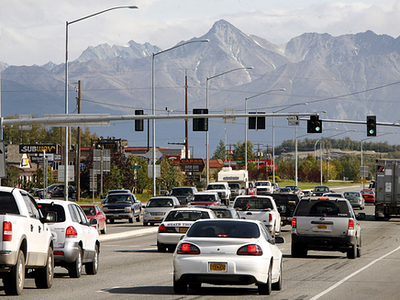

There's no taxes right?

There are no state income taxes or sales tax, but there is property tax.
Have you ever seen the Northern Lights?
Yes. Not too often though, people go to certain places to see them, there are also better seasons for it than others.
Do you know Sarah Palin?
Yes.
Is it cold all the time?
Realative to what? It's pretty cold, but the worst part of winter is how long it lasts. It also depends on your geographic location.
Do you see wildlife in your backyard?
Yeah, moose and rabits are most common.
Are there polar bears?
Yes, but they aren’t common.
What do you do for fun?
Normal things. People in Alaska generally like the outdoors though, including skiing, snowboarding, hiking, running, climbing, swimming, camping, boating, flying. People also drive, read, watch TV, go to the movies, drink, play games…
Is it light all the time?
In the summer the sun will barely set, some in the very northern part of Alaska the sun wont set for days in the summer
Are you scared of bears when you're hiking?
Bears generally only attack if they are suprised (or very hungry). Bear bells are a safety precaution.
Is it true you get paid to live in Alaska?
Not technically paid, but rewarded with what’s called the Permanent Fund Dividend (or PFD) since 1976. The payouts are funded by Alaska’s oil royalties and are divided up evenly among residents. The largest dividend was $3,269.00 per person in 2008 with an average of $1,185.28
How big is it?

Huge. If you put it on top of a map of the lower 48 it would cover 1/3 of the rest of the states.
Does everyone have guns?
Guns are common, and the laws aren't strict. You aren't required to have a license to carry a handgun either openly or concealed.
Is commercial fishing actually like Deadliest Catch?
It is dangerous, but it's probably not as dramatic as television makes it to be.
Are you a Sarah Palin fan?
No.
What time zone is Alaska in?
Alaska Standard Time. It's one hour less than Pacific Time.
Have you ever built an igloo?
I did once when I was young. It's like making a really sophistocated snowman.
Do you own a snowmobile?
I would say most people own snowmobiles, but Alaskans call them snowmachines. It's both a common hobbie and means of transportation.
How long does it take to fly to Alaska?
From New York, the shortest flight would be a little over 9 hours. Usually you would stop in Seattle though. Somewhere between 10-12 hours plus layvover.
Why are you cold? Aren't you from Alaska?
Actually, in Alaska you don't spend much time walking around outdoors unless you're prepared for it. Otherwise you're just walking from your car to a building. In New York for example, I spend a lot more time walking around in the winter and I definitely get cold.
Are there black people?
Yes. Actually, Anchorage has two of the most diverse neighborhoods in all of the US.
Is it dark?
At the peak of winter the sun will rise around 10 am and set around 4 pm.
What does Alaska look like?

What is the population?
Less than a million people. Somewhere around 700,000. Most of the people living in Anchorage, Fairbanks, Juneau and cities near Anchorage like Wasilla, Palmer, Eagle River.